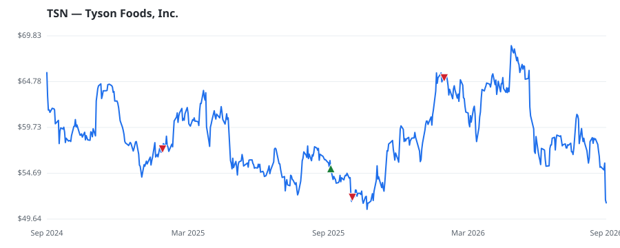

bullish · bearish · n/a — dots: price>SMA10 · SMA10>SMA50 · SMA50>SMA200 · up>down volume (20d)
Food, Beverage & Tobacco · large cap
Members who bought TSN earned a dollar-weighted -5.5% from their disclosure dates, versus -0.7% for the S&P 500 over the same holding windows (-4.8% alpha).

▲ green = a disclosed purchase · ▼ red = a disclosed sale (plotted on disclosure date)
Tyson Foods is a protein-focused food producer, selling raw chicken, beef, pork, and prepared foods. Chicken and beef are its two largest segments, composing about 40% and 30% of sales, respectively. Prepared foods constituted 18% of fiscal 2025 sales and include brands like Tyson, Jimmy Dean, Hillshire Farm, Ball Park, and Sara Lee. However, most of these are in product categories rife with competition where Tyson does not have a massive market share lead. Tyson sells some products overseas, but the international segment accounts for just 4% of total revenue. The company is an active acquirer POULTRY SLAUGHTERING AND PROCESSING · website
| Revenue | $54.4B | Net income | $507.0M |
|---|---|---|---|
| Operating income | $1.1B | Diluted EPS | $1.33 |
| Assets | $36.7B | Equity | $18.2B |
| Member | Chamber | Out-performer | Disclosed buys $ | Return on buys |
|---|---|---|---|---|
| Valerie Hoyle | house | — | $8K | -5.5% |
Disclosed $ figures are bracket midpoints — filings report ranges (e.g. $1,001–$15,000), not exact amounts.
| Fund | Fund alpha vs SPY | Position | % of book |
|---|---|---|---|
| Arnhold LLC | +26% | $3M | 0.2% |
| CoreCommodity Management, LLC | +40% | $3M | 0.5% |
| SENTINEL TRUST CO LBA | +5% | $2M | 0.2% |
| Generali Investments Towarzystwo Funduszy Inwestycyjnych | +11% | $0M | 0.1% |
Hedge data: SEC EDGAR 13F · ranked funds beat SPY in >50% of their quarters · fund alpha = mirror-portfolio return minus SPY.